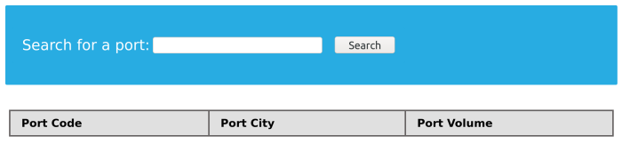

Input Validation
Input Validation
User input can be validated based on the data used to query to ensure that it matches the expected input.
PHP: vulnerable code to UNION injections<?php
if (isset($_GET["port_code"])) {
$q = "Select * from ports where port_code ilike '%" . $_GET["port_code"] . "%'";
$result = pg_query($conn,$q);
if (!$result)
{
die("</table></div><p style='font-size: 15px;'>" . pg_last_error($conn). "</p>");
}
<SNIP>
?>
The GET parameter port_code being used in the query directly.
How to PreventBecause it's already known that a port code consists only of letters or spaces. We can restrict the user input to only these characters, which will prevent the injection of queries.
• PHP
preg_match() → This function perform a regular expression match
<SNIP>
$pattern = "/^[A-Za-z\s]+$/";
$code = $_GET["port_code"];
if(!preg_match($pattern, $code)) {
die("</table></div><p style='font-size: 15px;'>Invalid input! Please try again.</p>");
}
$q = "Select * from ports where port_code ilike '%" . $code . "%'";
<SNIP>
The pattern used is [A-Za-z\s]+, which will only match strings containing letters and spaces. Any other character will result in the termination of the script.
Injection
'; SELECT 1,2,3,4-- - so will be rejected
